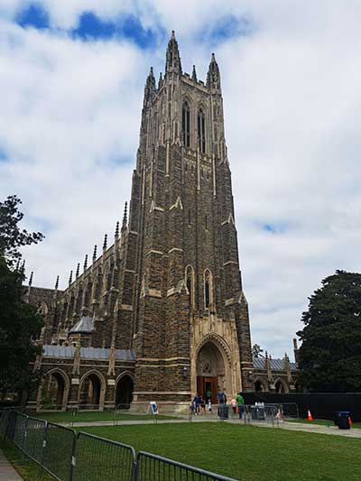
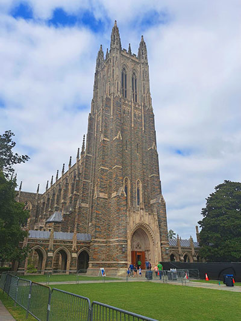
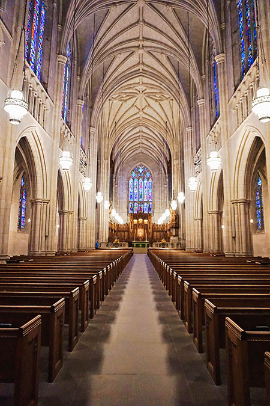
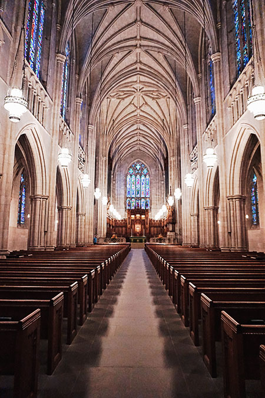
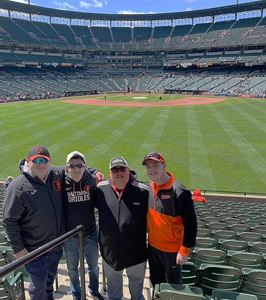
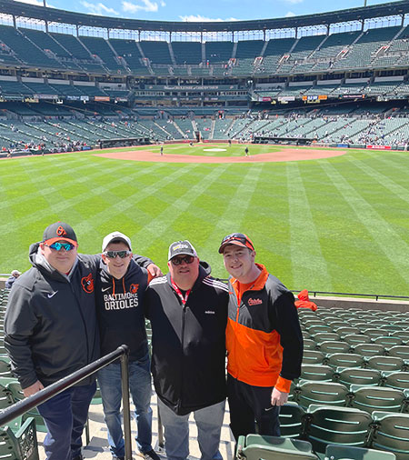
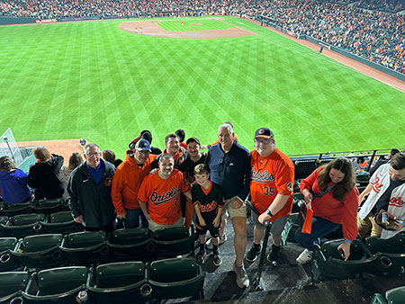
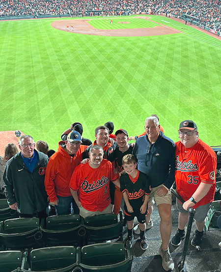

Patrick Shaw's AENG 110 Class Photograph Project |
|
| Home Print Project Info Graphic Project Video Project Photograph Project | |
|

Last weekend September 30th my family and I went to Duke, North Carolina for a football game. This is the chapel thats on campus. I am approximately 75 - 100 feet away from the base of the chapel. This is centering Composition, it is in the center of the photo. My friend also took this photo so I do not know the settings on it I would assume all auto, but Im not sure. |

For this photo I edited the saturation +40 and lightness +7 using the adjustment tool. Then the vibrance tool and increased magneta to +16%. |
|

Last weekend September 30th my family and I went to Duke, North Carolina for a football game. This photo is from the chapel that is on campus, this is the inside leading to the Alter. Im approximately 50 feet from the alter, the composition being used is leading lines. My friend took this photo on her android so Im not sure of the true settings she used if any special. |

For this photo I first used the properties tool to lower the Hue -11 and Saturation -32 for the image. Then I barely increased the brightness +4, and barely lowered the contrast -5. Lastly I made a small adjustment to the curves, not sure how to find the numbers for that. |
|

This photo is from last Easter 2022, my dad and my two cousins went to go see the Baltimore Orioles play a game. This is Probably my favorite photo in my camera Roll because it has the people I love the most and look up to and, at my favorite place. The camera settings are auto, the camera is approximately 5 - 10 feet away from us. Using the rule of thirds composition. |

I cropped this photo on my phone when it was taken, to cut out some of the dead space by our feet. I then increased the saturation +5 and lightness +10. Then I lower the brightness -13 and increased the saturation +13. Lastly I edited the curve, not sure how to find the numbers for that. |
|

This is from my trip to Duke but when we were heading down we stopped at Baltimore to watch the orioles clinch the AL East Champs and the 1 seed in the upcoming playoffs. It was a great game, sold out and an even greater accomplishment. For a team that hasn’t done that since the 90s. My Camera was not the one that took the picture but the phone that did had auto settings. Camera is about 10 feet from us. The composition is centered. |

I first cropped the image to try and get the people on this sides of us especially the lady on the right out of the way. Then I used the adjustments tool to slightly decreased the Hue -8 and Slightly increased both the saturation +11and lightness +5. Then I slightly increased the brightness +8, and drastically lowered the contrast -30. I did nothing to the curves for this photo. |
| Home Print Project Info Graphic Project Video Project Photograph Project |
©2023 Patrick Shaw |